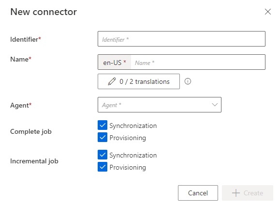
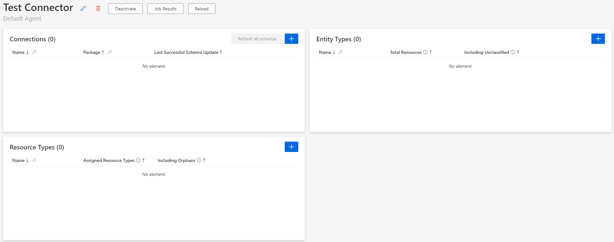
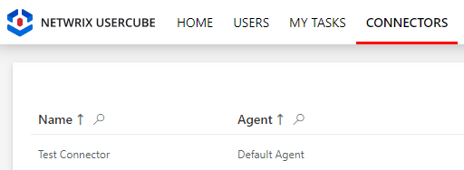

Create the Connector
How to declare the technical container of a Connector .
Overview
Here, you will learn how to create a connector: the shell that harbors entity types and connections related to a single managed system.
Keep in mind that a Identity Manager installation can have more than one agent. Connectors should be created with a specific agent in mind since the agent needs to physically connect to the managed system's data. Fortunately, you don't need to worry about that right now, since you are starting with the agent provided with Identity Manager's SaaS environment. See the Architecture topic for additional information.
Participants and Artifacts
For a given managed system, integrators may need the help of the application owner who knows the purpose of the application.
| Input | Output |
|---|---|
| - | Empty connector |
Create a Connector Container
Create a connector container by proceeding as follows:
-
On the home page in the Configuration section, click on the Connectors button.

You will see all existing connectors.
-
Click on the addition icon and fill in the information fields.


-
Identifier: must be unique among connectors, without any whitespace, start with a letter, and contain only letters, numbers,.and/or-. -
Name: will be displayed in the UI to identify the connector. -
Agent: agent that the connector is supposed to use.Netwrix Identity Manager (formerly Usercube)recommends choosing the provided SaaS agent.
-
Complete Job: Jobs scheduled to perform a set of tasks, including completesynchronization and/or provisioning for all the connectors, for which you selected the corresponding checkbox. -
Incremental Job: Jobs scheduled to perform frequently a set of tasks, including incrementalsynchronization and/or provisioning for all the connectors, for which you selected the corresponding checkbox.
-
-
Click on + Create to get on the connector's overview page:

Verify the Connector Declaration
In order to verify the process, check that the connector has been added to the connectors list with the right name and identifier.
